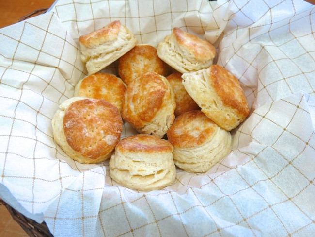

Acadian Biscuits

Description
Acadian biscuits are a traditional favorite.
Sturdy and hearty, they are best served with molasses.
Ingredients
- 3 cups white flour
- 3 tbs baking powder
- 3/4 tsp cream of tartar
- 1/2 tsp salt
- 1/2 cup butter
- 1 cup milk
- 1 egg
Method
- In a large bowl combine the dry ingredients
- Cut in the butter until it resembles coarse crumbs and set aside
- Mix the milk with the egg then add to the dry ingredients
- Stir several times but do not overmix
- Turn out onto a flat surface and with a rolling pin flatten to 1/2 inch
- Cut out your biscuits with an empty tin can or cookie cutter and place on a greased baking sheet
- Bake at 350 degrees C for 12 minutes or until golden brown